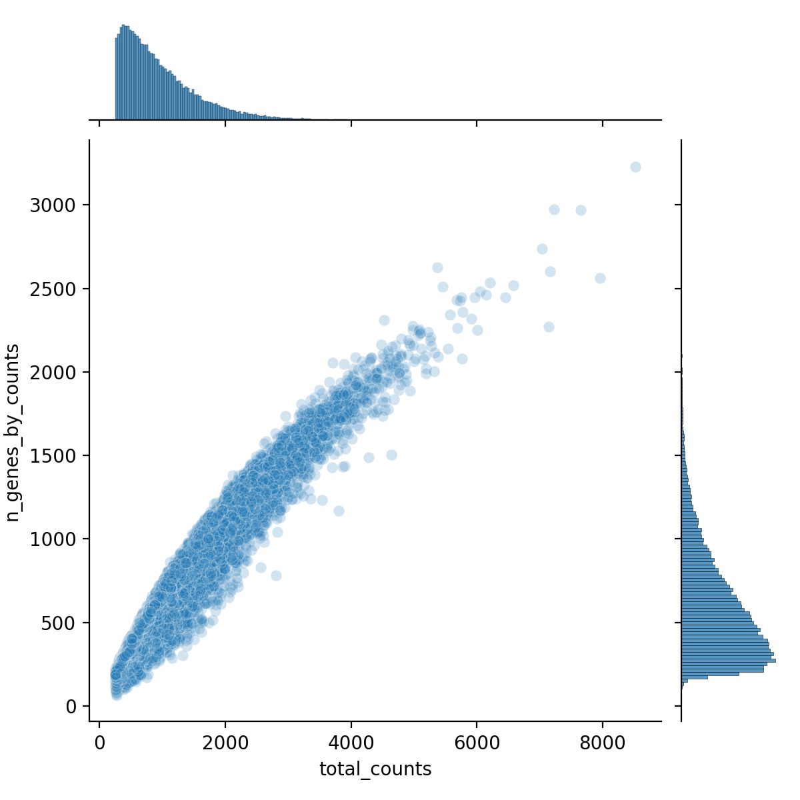
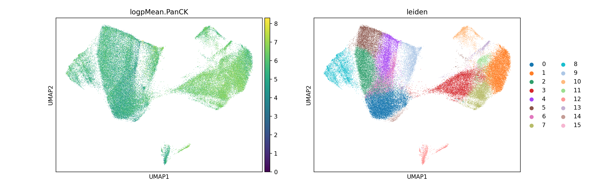

![]()
1 Introduction
Elucidating the spatial distribution of RNA transcripts and protein is one of the fundamental utilities of the CosMx™ Spatial Molecular Imager (SMI). When it comes to analysis, the AtoMx™ Spatial Informatics Portal (SIP) is an end-to-end solution that has several advantages including built-in analysis modules, data storage, and the ability to analyze from a browser window. For fully custom analyses, the SIP also has the ability to export the data.
There are a growing number of open-sourced analysis solutions that can analyze and visualize SMI data. For example, Giotto (Dries et al. 2021) has been available for a few years, uses a range of algorithms, and has ways to visualize tissue images built in. More recently, Seurat (Hao et al. 2024), another R package (and another artist!), has added image viewing capabilities into its workflow. For vignettes on how to analyze and visualize SMI data with Seurat, check out our recent blog post or the vignette from Seurat’s website.
For python users, I find squidpy (Palla et al. 2022) works well, is feature-rich, and is speedy. Part of this efficiency is thanks to the anndata package. For more info on creating anndata objects with SMI data, see this post. Squidpy also has a built-in function to read in SMI data, read.nanostring, that reads in the counts data, metadata, and optionally the field of view (FOV) file and image data. The developers also have a vignette that uses a slide from the first public data release of SMI data (He et al. 2022). Note that the example dataset in that vignette uses a legacy file format that differs slightly compared to AtoMx SIP. For more information on the differences, see this post.
In this blog post, I’ll show you how to:
- Section 2 export the squidpy-relevant files from AtoMx SIP
- Section 3 (and Appendix Section 7.1) tips for installing squidpy
- Section 4 analysis examples without spatial images
- Section 5 how to pivot your AtoMx SIP-exported data into a format that can be used with squidpy and image-based analysis examples
Note
In this blog post I provide some analysis examples but this is not intended to provide recommendations of parameters, clustering approaches, etc. I have not tested my example dataset on all of the squidpy functions so there may be errors.
Like other items in our CosMx Analysis Scratch Space, the usual caveats and license applies.
2 Exporting data from AtoMx™ SIP
For this post I will be analyzing a single breast cancer slide that has about 80,000 cells, 64 FOVs, and with the 6K Discovery Panel. I’m using the CosMx Data Analysis v1.3.2 software in AtoMx SIP. To take full advantage of squidpy’s functionality, I’ll need to partially export 1) “flat files” and 2) raw data (Figure 1).
Note
We call them “flat files” since they are in a human-readable and accessible format (i.e., comma separated files). These files, like Seurat files and Tiledb files, aren’t actually raw data but rather processed from the raw data. Versions of flat files may change with time and over the course of an analysis (e.g., cell type column added to the metadata file as highlighted in this post).
Squidpy uses three of the five flat files:
The two required input files for squidpy are:
- counts_file - cell (row) by target (column) expression matrix
- meta_file - cell-level metadata file
And an optional input file is:
- fov_file - containing coordinates of all FOVs.
Once export is complete, download the data using your SFTP application (e.g., cyberduck, FileZilla, WinSCP).
Figure 2 shows a screenshot of the data structure in Cyberduck. The flat files are nested within a folder named after the flow cell (e.g., AUG29_13INTEGR_6k_BRST_PS_S2) and are compressed in gz format. The raw data are in a separate folder and nested within a folder named after the flow cell and another folder named after the slide (e.g., 20230829_212648_S2). Of the subfolders of the raw data, the data that we’ll need for today are in CellStatsDir.

3 Install Squidpy
Assuming you have Python3 installed on your system, squidpy can be installed using pip3 like this:
Terminal
pip3 install squidpyFor installing within a virtual environment (recommended), see the Appendix (Section 7.1).
4 Analysis without imaging data
In the simplest form, we can use squidpy without imaging data by reading the expression data, metadata, and optionally the FOV positions data. These analyses include normalization, PCA, umap, etc. I’ll provide some code here but for more details please see the squidpy vignette.
4.1 Reading expression and metadata only
Create an anndata object like this:
Python
from pathlib import Path
import os
import numpy as np
import pandas as pd
import matplotlib.pyplot as plt
import seaborn as sns
import scanpy as sc
import squidpy as sq
flat_file_dir = 'path/to/breast_cancer_example/flatFiles/AUG29_13INTEGR_6K_BRST_PS_S2'
meta_file = [item for item in os.listdir(flat_file_dir) if 'metadata_file' in item][0]
counts_file = [item for item in os.listdir(flat_file_dir) if 'exprMat_file' in item][0]
adata0 = sq.read.nanostring(
path=flat_file_dir,
counts_file=counts_file,
meta_file=meta_file
)
adata0AnnData object with n_obs × n_vars = 80073 × 6524
obs: 'RNA_nbclust_132d0e1b.dc7d.48de.814b.a88cd8d14f03_1_clusters', 'RNA_nbclust_132d0e1b.dc7d.48de.814b.a88cd8d14f03_1_posterior_probability', 'RNA_nbclust_9685fc9a.4f00.4267.99c1.ce1cb894807f_1_clusters', 'RNA_nbclust_9685fc9a.4f00.4267.99c1.ce1cb894807f_1_posterior_probability', 'cell', 'nCount_RNA', 'nFeature_RNA', 'nCount_negprobes', 'nFeature_negprobes', 'fov', 'Area', 'AspectRatio', 'Width', 'Height', 'Mean.PanCK', 'Max.PanCK', 'Mean.CD68_CK8_18', 'Max.CD68_CK8_18', 'Mean.CD298_B2M', 'Max.CD298_B2M', 'Mean.CD45', 'Max.CD45', 'Mean.DAPI', 'Max.DAPI', 'cell_id', 'assay_type', 'version', 'Run_Tissue_name', 'Panel', 'cellSegmentationSetId', 'cellSegmentationSetName', 'slide_ID', 'CenterX_global_px', 'CenterY_global_px', 'unassignedTranscripts', 'nCount_falsecode', 'nFeature_falsecode', 'Area.um2', 'propNegative', 'complexity', 'errorCtEstimate', 'percOfDataFromError', 'qcFlagsRNACounts', 'qcFlagsCellCounts', 'qcFlagsCellPropNeg', 'qcFlagsCellComplex', 'qcFlagsCellArea', 'qcCellsFlagged', 'median_negprobes', 'negprobes_quantile_0.9', 'median_RNA', 'RNA_quantile_0.9', 'nCell', 'nCount', 'nCountPerCell', 'nFeaturePerCell', 'propNegativeCellAvg', 'complexityCellAvg', 'errorCtPerCellEstimate', 'percOfDataFromErrorPerCell', 'qcFlagsFOV', 'i.median_negprobes', 'i.negprobes_quantile_0.9', 'i.median_RNA', 'i.RNA_quantile_0.9', 'cell_ID'
uns: 'spatial'
obsm: 'spatial', 'spatial_fov'
Note
The column names that you have may differ from the ones above. That’s because the example dataset has been processed in AtoMx SIP which created additional columns (e.g., RNA_nbclust_[GUID]_1_clusters). For more information on the expected columns from flat file exports, see the metadata column descriptions.
4.2 Including the FOV file
If we try to read in the optional FOV file generated in AtoMx SIP using squidpy v1.5.0, we might get an error stating “Index fov invalid”.
Python
fov_file = [item for item in os.listdir(flat_file_dir) if 'fov_positions_file' in item][0]
adata = sq.read.nanostring(
path=flat_file_dir,
counts_file=counts_file,
meta_file=meta_file,
fov_file=fov_file
)
Click to show error
---------------------------------------------------------------------------
ValueError Traceback (most recent call last)
Cell In[23], line 3
1 fov_file = [item for item in os.listdir(flat_file_dir) if 'fov_positions_file' in item][0]
----> 3 adata = sq.read.nanostring(
4 path=flat_file_dir,
5 counts_file=counts_file,
6 meta_file=meta_file,
7 fov_file=fov_file
8 )
File <project path>/.venv/lib/python3.10/site-packages/squidpy/read/_read.py:266, in nanostring(path, counts_file, meta_file, fov_file)
263 continue
265 if fov_file is not None:
--> 266 fov_positions = pd.read_csv(path / fov_file, header=0, index_col=fov_key)
267 for fov, row in fov_positions.iterrows():
268 try:
File <project path>/.venv/lib/python3.10/site-packages/pandas/io/parsers/readers.py:1026, in read_csv(filepath_or_buffer, sep, delimiter, header, names, index_col, usecols, dtype, engine, converters, true_values, false_values, skipinitialspace, skiprows, skipfooter, nrows, na_values, keep_default_na, na_filter, verbose, skip_blank_lines, parse_dates, infer_datetime_format, keep_date_col, date_parser, date_format, dayfirst, cache_dates, iterator, chunksize, compression, thousands, decimal, lineterminator, quotechar, quoting, doublequote, escapechar, comment, encoding, encoding_errors, dialect, on_bad_lines, delim_whitespace, low_memory, memory_map, float_precision, storage_options, dtype_backend)
1013 kwds_defaults = _refine_defaults_read(
1014 dialect,
1015 delimiter,
(...)
1022 dtype_backend=dtype_backend,
1023 )
1024 kwds.update(kwds_defaults)
-> 1026 return _read(filepath_or_buffer, kwds)
File <project path>/.venv/lib/python3.10/site-packages/pandas/io/parsers/readers.py:626, in _read(filepath_or_buffer, kwds)
623 return parser
625 with parser:
--> 626 return parser.read(nrows)
File <project path>/.venv/lib/python3.10/site-packages/pandas/io/parsers/readers.py:1923, in TextFileReader.read(self, nrows)
1916 nrows = validate_integer("nrows", nrows)
1917 try:
1918 # error: "ParserBase" has no attribute "read"
1919 (
1920 index,
1921 columns,
1922 col_dict,
-> 1923 ) = self._engine.read( # type: ignore[attr-defined]
1924 nrows
1925 )
1926 except Exception:
1927 self.close()
File <project path>/.venv/lib/python3.10/site-packages/pandas/io/parsers/c_parser_wrapper.py:333, in CParserWrapper.read(self, nrows)
330 data = {k: v for k, (i, v) in zip(names, data_tups)}
332 names, date_data = self._do_date_conversions(names, data)
--> 333 index, column_names = self._make_index(date_data, alldata, names)
335 return index, column_names, date_data
File <project path>/.venv/lib/python3.10/site-packages/pandas/io/parsers/base_parser.py:371, in ParserBase._make_index(self, data, alldata, columns, indexnamerow)
368 index = None
370 elif not self._has_complex_date_col:
--> 371 simple_index = self._get_simple_index(alldata, columns)
372 index = self._agg_index(simple_index)
373 elif self._has_complex_date_col:
File <project path>/.venv/lib/python3.10/site-packages/pandas/io/parsers/base_parser.py:403, in ParserBase._get_simple_index(self, data, columns)
401 index = []
402 for idx in self.index_col:
--> 403 i = ix(idx)
404 to_remove.append(i)
405 index.append(data[i])
File <project path>/.venv/lib/python3.10/site-packages/pandas/io/parsers/base_parser.py:398, in ParserBase._get_simple_index.<locals>.ix(col)
396 if not isinstance(col, str):
397 return col
--> 398 raise ValueError(f"Index {col} invalid")
ValueError: Index fov invalidThis error arises because of a format change that is detailed in this post. A simple fix is to adjust the column name in the fov file from “FOV” to the legacy “fov” like this:
Python
fov_file = [item for item in os.listdir(flat_file_dir) if 'fov_positions_file' in item][0]
fov_df = pd.read_csv(os.path.join(flat_file_dir, fov_file))
if 'FOV' in fov_df.columns:
print("Refactoring file to older format.")
# Rename 'FOV' column to 'fov'
fov_df.rename(columns={'FOV': 'fov'}, inplace=True)
# have fov_file reference the new, formatted file and write it
fov_file = os.path.join(flat_file_dir,'fov_positions_formatted.csv')
fov_df.to_csv(fov_file, index=False)
adata1 = sq.read.nanostring(
path=flat_file_dir,
counts_file=counts_file,
meta_file=meta_file,
fov_file=fov_file
)
Refactoring file to older format.
AnnData object with n_obs × n_vars = 80073 × 6524
obs: 'RNA_nbclust_132d0e1b.dc7d.48de.814b.a88cd8d14f03_1_clusters', 'RNA_nbclust_132d0e1b.dc7d.48de.814b.a88cd8d14f03_1_posterior_probability', 'RNA_nbclust_9685fc9a.4f00.4267.99c1.ce1cb894807f_1_clusters', 'RNA_nbclust_9685fc9a.4f00.4267.99c1.ce1cb894807f_1_posterior_probability', 'cell', 'nCount_RNA', 'nFeature_RNA', 'nCount_negprobes', 'nFeature_negprobes', 'fov', 'Area', 'AspectRatio', 'Width', 'Height', 'Mean.PanCK', 'Max.PanCK', 'Mean.CD68_CK8_18', 'Max.CD68_CK8_18', 'Mean.CD298_B2M', 'Max.CD298_B2M', 'Mean.CD45', 'Max.CD45', 'Mean.DAPI', 'Max.DAPI', 'cell_id', 'assay_type', 'version', 'Run_Tissue_name', 'Panel', 'cellSegmentationSetId', 'cellSegmentationSetName', 'slide_ID', 'CenterX_global_px', 'CenterY_global_px', 'unassignedTranscripts', 'nCount_falsecode', 'nFeature_falsecode', 'Area.um2', 'propNegative', 'complexity', 'errorCtEstimate', 'percOfDataFromError', 'qcFlagsRNACounts', 'qcFlagsCellCounts', 'qcFlagsCellPropNeg', 'qcFlagsCellComplex', 'qcFlagsCellArea', 'qcCellsFlagged', 'median_negprobes', 'negprobes_quantile_0.9', 'median_RNA', 'RNA_quantile_0.9', 'nCell', 'nCount', 'nCountPerCell', 'nFeaturePerCell', 'propNegativeCellAvg', 'complexityCellAvg', 'errorCtPerCellEstimate', 'percOfDataFromErrorPerCell', 'qcFlagsFOV', 'i.median_negprobes', 'i.negprobes_quantile_0.9', 'i.median_RNA', 'i.RNA_quantile_0.9', 'cell_ID'
uns: 'spatial'
obsm: 'spatial', 'spatial_fov'4.3 Analysis
Note
Please note that the code in this section is an example and not a recommendation for specific thresholding, QC filtering, clustering parmaterization, etc. of SMI data.
With the expression and metadata loaded, we can run exploratory data analysis similar to what was described in the squidpy vignette. There are some adjustments to squidpy’s vignette that are needed. These adjustments reflect the flat file format changes (detailed here).
Python
# Place control targets into separate variables
adata1.var["Negative"] = adata1.var_names.str.startswith("Negative")
adata1.var["SystemControl"] = adata1.var_names.str.startswith("SystemControl")
adata1AnnData object with n_obs × n_vars = 80073 × 6524
obs: 'RNA_nbclust_132d0e1b.dc7d.48de.814b.a88cd8d14f03_1_clusters', 'RNA_nbclust_132d0e1b.dc7d.48de.814b.a88cd8d14f03_1_posterior_probability', 'RNA_nbclust_9685fc9a.4f00.4267.99c1.ce1cb894807f_1_clusters', 'RNA_nbclust_9685fc9a.4f00.4267.99c1.ce1cb894807f_1_posterior_probability', 'cell', 'nCount_RNA', 'nFeature_RNA', 'nCount_negprobes', 'nFeature_negprobes', 'fov', 'Area', 'AspectRatio', 'Width', 'Height', 'Mean.PanCK', 'Max.PanCK', 'Mean.CD68_CK8_18', 'Max.CD68_CK8_18', 'Mean.CD298_B2M', 'Max.CD298_B2M', 'Mean.CD45', 'Max.CD45', 'Mean.DAPI', 'Max.DAPI', 'cell_id', 'assay_type', 'version', 'Run_Tissue_name', 'Panel', 'cellSegmentationSetId', 'cellSegmentationSetName', 'slide_ID', 'CenterX_global_px', 'CenterY_global_px', 'unassignedTranscripts', 'nCount_falsecode', 'nFeature_falsecode', 'Area.um2', 'propNegative', 'complexity', 'errorCtEstimate', 'percOfDataFromError', 'qcFlagsRNACounts', 'qcFlagsCellCounts', 'qcFlagsCellPropNeg', 'qcFlagsCellComplex', 'qcFlagsCellArea', 'qcCellsFlagged', 'median_negprobes', 'negprobes_quantile_0.9', 'median_RNA', 'RNA_quantile_0.9', 'nCell', 'nCount', 'nCountPerCell', 'nFeaturePerCell', 'propNegativeCellAvg', 'complexityCellAvg', 'errorCtPerCellEstimate', 'percOfDataFromErrorPerCell', 'qcFlagsFOV', 'i.median_negprobes', 'i.negprobes_quantile_0.9', 'i.median_RNA', 'i.RNA_quantile_0.9', 'cell_ID'
var: 'Negative', 'SystemControl'
uns: 'spatial'
obsm: 'spatial', 'spatial_fov'We can calculate QC metrics with scanpy’s (Wolf, Angerer, and Theis 2018) pre-processing tool calculate_qc_metrics method. In the code below, we are going to add Negatives and SystemControls as the qc_var argument (which will add cell-level columns to obs). In addition, target-level columns are added to var.
Python
sc.pp.calculate_qc_metrics(adata1, qc_vars=["Negative", "SystemControl"], inplace=True)
adata1AnnData object with n_obs × n_vars = 80073 × 6524
obs: 'RNA_nbclust_132d0e1b.dc7d.48de.814b.a88cd8d14f03_1_clusters', 'RNA_nbclust_132d0e1b.dc7d.48de.814b.a88cd8d14f03_1_posterior_probability', 'RNA_nbclust_9685fc9a.4f00.4267.99c1.ce1cb894807f_1_clusters', 'RNA_nbclust_9685fc9a.4f00.4267.99c1.ce1cb894807f_1_posterior_probability', 'cell', 'nCount_RNA', 'nFeature_RNA', 'nCount_negprobes', 'nFeature_negprobes', 'fov', 'Area', 'AspectRatio', 'Width', 'Height', 'Mean.PanCK', 'Max.PanCK', 'Mean.CD68_CK8_18', 'Max.CD68_CK8_18', 'Mean.CD298_B2M', 'Max.CD298_B2M', 'Mean.CD45', 'Max.CD45', 'Mean.DAPI', 'Max.DAPI', 'cell_id', 'assay_type', 'version', 'Run_Tissue_name', 'Panel', 'cellSegmentationSetId', 'cellSegmentationSetName', 'slide_ID', 'CenterX_global_px', 'CenterY_global_px', 'unassignedTranscripts', 'nCount_falsecode', 'nFeature_falsecode', 'Area.um2', 'propNegative', 'complexity', 'errorCtEstimate', 'percOfDataFromError', 'qcFlagsRNACounts', 'qcFlagsCellCounts', 'qcFlagsCellPropNeg', 'qcFlagsCellComplex', 'qcFlagsCellArea', 'qcCellsFlagged', 'median_negprobes', 'negprobes_quantile_0.9', 'median_RNA', 'RNA_quantile_0.9', 'nCell', 'nCount', 'nCountPerCell', 'nFeaturePerCell', 'propNegativeCellAvg', 'complexityCellAvg', 'errorCtPerCellEstimate', 'percOfDataFromErrorPerCell', 'qcFlagsFOV', 'i.median_negprobes', 'i.negprobes_quantile_0.9', 'i.median_RNA', 'i.RNA_quantile_0.9', 'cell_ID', 'n_genes_by_counts', 'log1p_n_genes_by_counts', 'total_counts', 'log1p_total_counts', 'pct_counts_in_top_50_genes', 'pct_counts_in_top_100_genes', 'pct_counts_in_top_200_genes', 'pct_counts_in_top_500_genes', 'total_counts_Negative', 'log1p_total_counts_Negative', 'pct_counts_Negative', 'total_counts_SystemControl', 'log1p_total_counts_SystemControl', 'pct_counts_SystemControl'
var: 'Negative', 'SystemControl', 'n_cells_by_counts', 'mean_counts', 'log1p_mean_counts', 'pct_dropout_by_counts', 'total_counts', 'log1p_total_counts'
uns: 'spatial'
obsm: 'spatial', 'spatial_fov'We can explore these cell-level and target-level QC metrics with visuals using the seaborn package. For example the code below generates Figure 3 and shows how the number of unique genes in a cell correlates with the total number of transcripts in a cell.
Python
sns.jointplot(
data=adata1.obs,
x="total_counts",
y="n_genes_by_counts",
kind="scatter",
alpha=0.2
)
plt.savefig("figures/fig-qc.png", dpi=200)

The total Negative probe counts by total counts is shown below and Figure 4.
Python
sns.jointplot(
data=adata1.obs,
x="total_counts",
y="total_counts_Negative",
kind="scatter",
alpha=0.2
)
plt.savefig("figures/fig-qc1.png", dpi=200)
We see that the proportion of negative counts relative to total counts is:
Python
adata1.obs["total_counts_Negative"].sum() / adata1.obs["total_counts"].sum()0.00041567286608445926 (i.e., 0.04%)
Histograms of total transcripts, total unique genes per cell, and total transcrips per FOV can be seen in Figure 5.
Python
fig, axs = plt.subplots(1, 3, figsize=(15, 4))
axs[0].set_title("Total transcripts per cell")
sns.histplot(
adata1.obs["total_counts"],
kde=False,
ax=axs[0],
)
axs[1].set_title("Unique transcripts per cell")
sns.histplot(
adata1.obs["n_genes_by_counts"],
kde=False,
ax=axs[1],
)
axs[2].set_title("Transcripts per FOV")
sns.histplot(
adata1.obs.groupby("fov").sum()["total_counts"],
kde=False,
ax=axs[2],
)
plt.savefig("figures/fig-qc2.png", dpi=200)
We can filter, normalize, and cluster with scanpy’s functions. For a full list of available functions, see scanpy’s API documentation.
Python
adata1.shape(80073, 6524)
Python
sc.pp.filter_cells(adata1, min_counts=250)
sc.pp.filter_genes(adata1, min_cells=1000)
adata1.shape(69293, 6177)
Python
adata1.layers["counts"] = adata1.X.copy()
sc.pp.normalize_total(adata1, inplace=True, exclude_highly_expressed=True)
sc.pp.log1p(adata1)
sc.pp.pca(adata1, n_comps=50)
sc.pp.neighbors(adata1)
sc.tl.umap(adata1, min_dist=0.2, spread=1)
sc.tl.leiden(adata1)Python
adata1.obs["logpMean.PanCK"] = np.log1p(adata1.obs['Mean.PanCK'])
sc.pl.umap(
adata1,
color=["logpMean.PanCK","leiden"]
)

5 Image and Spatial Analysis
Up until this point we haven’t use image data. In this section I’ll show how to prepare a slide exported from AtoMx SIP into squidpy, and touch on some of the image-based analyses that are possible.
5.1 Rearrange data files to match squidpy’s layout
If we take a look one of the NSCLC public datasets from He et al. (2022) (Lung5_Rep1), we can see the expected file structure has four folders (CellComposite, CellLabels, CellOverlay, and CompartmentLabels) and four flat files.
Terminal
tree -L 3
├── Lung5_Rep1-Flat_files_and_images
│ ├── CellComposite
│ │ ├── CellComposite_F001.jpg
| | ...
│ │ └── CellComposite_F032.jpg
│ ├── CellLabels
│ │ ├── CellLabels_F001.tif
| | ...
│ │ └── CellLabels_F032.tif
│ ├── CellOverlay
│ │ ├── CellOverlay_F001.jpg
| | ...
│ │ └── CellOverlay_F032.jpg
│ ├── CompartmentLabels
│ │ ├── CompartmentLabels_F001.tif
| | ...
│ │ └── CompartmentLabels_F032.tif
│ ├── Lung5_Rep1_exprMat_file.csv
│ ├── Lung5_Rep1_fov_positions_file.csv
│ ├── Lung5_Rep1_metadata_file.csv
│ └── Lung5_Rep1_tx_file.csvThis file structure is actually a subset of the raw data and flat files that are exported from AtoMx SIP.
Terminal
tree -L 3
├── RawFiles
│ └── <flow cell>
│ └── <slide>
│ ├── AnalysisResults
│ │ └── muy2ybakqy
│ ├── CellStatsDir
│ │ ├── <slide>_C902_P02_To_P01_RegStats.csv
│ │ ├── CellComposite
│ │ ├── CellOverlay
│ │ ├── FOV001
│ │ │ ├── CellBoundaries_F001.csv
│ │ │ ├── CellBoundaries_F001_935.fz
│ │ │ ├── CellLabels_F001.tif
│ │ │ ├── CompartmentLabels_F001.tif
│ │ │ ├── Run_86906312-688f-4f31-9fc5-48b04db5f958_<slide>_Cell_Stats_F001.csv
│ │ │ └── Run_86906312-688f-4f31-9fc5-48b04db5f958_FOV001__complete_code_cell_target_call_coord.cs
│ │ ...
│ │ ├── FOV064
│ │ └── Morphology2D
│ └── RunSummary
│ ├── 75d021be-b81e-4d7d-ad28-d390a13da7ad.mkit
│ ├── Beta15_Affine_Transform_20221118.csv
│ ├── Distortion
│ ├── FovTracking
│ ├── Morphology_ChannelID_Dictionary.txt
│ ├── Run86906312-688f-4f31-9fc5-48b04db5f958_<slide>_Beta15_RNA_SpatialBC_Metrics4D.csv
│ ├── Run_86906312-688f-4f31-9fc5-48b04db5f958_<slide>_Beta15_ExptConfig.txt
│ ├── SampleSlide_PlaneFit_<slide>_History.csv
│ ├── Shading
│ ├── c902.fovs.csv
│ ├── latest.af.fovs.csv
│ └── latest.fovs.csv
├── flatFiles
│ └── <flow cell>
│ ├── <flow cell>_exprMat_file.csv.gz
│ ├── <flow cell>_fov_positions_file.csv.gz
│ ├── <flow cell>_metadata_file.csv.gz
│ └── fov_positions_formatted.csvSo in order to read in image data into squidpy, we must first rearrange our folders. We can do this manually by moving, copying, or linking files to match the expected format. Normally I am a big fan of symbolic links for just this situation. However, I have noticed that read.nanostring can have an error when using symbolic links for some of the files (error not shown). So for simplicity I will make a copy of the data and place them into a new folder sample_dir_formatted.
Terminal
# Note that this code works for a single slide. If exporting
# multiple slides, some modification might be necessary.
# cd to parent directory
# create a directory adjacent to RawData and flatFiles
mkdir -p sample_dir_formatted && cd $_
# Add flat files
for file in $(ls ../flatFiles/*/*csv*); do cp $file ./; done
# Add folders
cp -r ../RawFiles/*/*/CellStatsDir/CellComposite ./
cp -r ../RawFiles/*/*/CellStatsDir/CellOverlay ./
mkdir -p CellLabels
for file in $(ls ../RawFiles/*/*/CellStatsDir/FOV*/CellLabels*); do cp $file ./CellLabels/ ; done
rm ./CellLabels/._Cell*
mkdir -p CompartmentLabels
for file in $(ls ../RawFiles/*/*/CellStatsDir/FOV*/CompartmentLabels*); do cp $file ./CompartmentLabels/ ; doneThe file structure of sample_dir_formatted now looks like this:
Terminal
tree -L 2
.
├── <flow cell>_exprMat_file.csv.gz
├── <flow cell>_fov_positions_file.csv.gz
├── <flow cell>_metadata_file.csv.gz
├── CellComposite
│ ├── CellComposite_F001.jpg
| ├── ...
│ └── CellComposite_F064.jpg
├── CellLabels
│ ├── CellLabels_F001.tif
| ├── ...
│ └── CellLabels_F064.tif
├── CellOverlay
│ ├── CellOverlay_F001.jpg
| ├── ...
│ └── CellOverlay_F064.jpg
└── CompartmentLabels
├── CompartmentLabels_F001.tif
...
└── CompartmentLabels_F064.tif
Note
If your flow cell was created prior to AtoMx v1.3.2, the CellComposite jpg files may not show the composites but instead just blank images. They will still load into squidpy but will not show the expected tissue structure. This issue was patched for samples created in v1.3.2+. If you have blank images and would like to replace them with composite images, check out this post.
5.2 Read expression and image data into squidpy
The block of code below reads the flat files and images now that the image data are in the specified format. The location of the data in the example code below is sample_dir and is provided as the argument for the path parameter of read.nanostring.
Python
from pathlib import Path
import os
import numpy as np
import pandas as pd
import matplotlib.pyplot as plt
import seaborn as sns
import scanpy as sc
import squidpy as sq
sample_dir = 'path/to/breast_cancer_example/sample_dir_formatted'
meta_file = [item for item in os.listdir(sample_dir) if 'metadata_file' in item][0]
counts_file = [item for item in os.listdir(sample_dir) if 'exprMat_file' in item][0]
fov_file = [item for item in os.listdir(sample_dir) if 'fov_positions_file' in item][0]
fov_df = pd.read_csv(os.path.join(sample_dir, fov_file))
if 'FOV' in fov_df.columns:
print("Refactoring file to older format.")
# Rename 'FOV' column to 'fov'
fov_df.rename(columns={'FOV': 'fov'}, inplace=True)
# have fov_file reference the new, formatted file and write it
fov_file = os.path.join(sample_dir,'fov_positions_formatted.csv')
fov_df.to_csv(fov_file, index=False)
adata2 = sq.read.nanostring(
path=sample_dir,
counts_file=counts_file,
meta_file=meta_file,
fov_file=fov_file
)
# This part of the analyis is similar to above
adata2.var["Negative"] = adata2.var_names.str.startswith("Negative")
adata2.var["SystemControl"] = adata2.var_names.str.startswith("SystemControl")
sc.pp.calculate_qc_metrics(adata2, qc_vars=["Negative", "SystemControl"], inplace=True)
sc.pp.filter_cells(adata2, min_counts=250)
sc.pp.filter_genes(adata2, min_cells=1000)
adata2.layers["counts"] = adata2.X.copy()
sc.pp.normalize_total(adata2, inplace=True, exclude_highly_expressed=True)
sc.pp.log1p(adata2)
sc.pp.pca(adata2, n_comps=50)
sc.pp.neighbors(adata2)
sc.tl.umap(adata2, min_dist=0.2, spread=1)
sc.tl.leiden(adata2)
5.3 Spatial Analysis
In addition to the analysis code we’ve already covered, we can view and analyze our CosMx results with image data. For a full list of features, please see squidpy’s documentation. For some of the examples below, I’ll use a subset of the data – a single FOV – to speed up computation and to make plotting easier.
Python
adata_subset = adata2[adata2.obs.fov == "35"].copy()5.3.1 Viewing results in space
Figure 7 shows a single FOV image data with cells drawn as contours that are colored based on their Leiden cluster.
Python
sq.pl.spatial_segment(
adata2,
color="leiden",
seg_contourpx=20,
seg_cell_id="cell_ID",
library_key="fov",
library_id="35",
img=True,
size=60,
figsize = (4, 4),
dpi = 200,
save = "fig-image1.png"
)

5.3.2 Autocorrelation with Moran’s I
Moran’s I is a useful spatial statistic for measuring the extent that a gene’s expression is clustered in space (verus random or dispersed). Taking a look at the single-FOV subset, we see genes with positive Moran’s I.
Python
sq.gr.spatial_neighbors(adata_subset, coord_type="generic", delaunay=True)
sq.gr.spatial_autocorr(
adata_subset,
mode="moran",
n_perms=100,
n_jobs=1,
)
adata_subset.uns["moranI"].head(10) I pval_norm var_norm pval_z_sim pval_sim var_sim pval_norm_fdr_bh pval_z_sim_fdr_bh pval_sim_fdr_bh
CRIP1 0.634842 0.0 0.000279 0.0 0.009901 0.000460 0.0 0.0 0.044936
COX6C 0.624853 0.0 0.000279 0.0 0.009901 0.000496 0.0 0.0 0.044936
COL1A1 0.616015 0.0 0.000279 0.0 0.009901 0.000476 0.0 0.0 0.044936
SCGB2A2 0.587074 0.0 0.000279 0.0 0.009901 0.000419 0.0 0.0 0.044936
COL1A2 0.572189 0.0 0.000279 0.0 0.009901 0.000487 0.0 0.0 0.044936
COL3A1 0.559603 0.0 0.000279 0.0 0.009901 0.000449 0.0 0.0 0.044936
SPARC 0.547069 0.0 0.000279 0.0 0.009901 0.000394 0.0 0.0 0.044936
KRT8 0.516281 0.0 0.000279 0.0 0.009901 0.000427 0.0 0.0 0.044936
ERBB2 0.509171 0.0 0.000279 0.0 0.009901 0.000458 0.0 0.0 0.044936
KRT19 0.502475 0.0 0.000279 0.0 0.009901 0.000529 0.0 0.0 0.044936
When we plot the expression of some of these genes (Figure 8), we indeed see some how they are aggregated. For example, COX6C expression, which may have clinical significance with breast cancer (Tian et al. 2021), is autocorrelated and co-occurs with cells high in KRT19.
Python
sq.pl.spatial_segment(
adata_subset,
library_id="35",
seg_cell_id="cell_ID",
library_key="fov",
color=["COX6C", "COL1A1", "KRT19"],
size=60,
img=False,
figsize=(4, 4),
dpi = 200,
save = "fig-nhood-Morans-I.png"
)5.3.3 Spatial co-occurence
While Moran’s I quantifies autocorrelation of genes, spatial co-occurence with gr.co_occurence quantifies cell-level co-occurences. In example below, co-occurence of Leiden clusters was used (Figure 9).
Python
sq.gr.co_occurrence(
adata_subset,
cluster_key="leiden",
)
sq.pl.co_occurrence(
adata_subset,
cluster_key="leiden",
clusters="1",
save = "fig-co-occurence1.png"
)
sq.pl.spatial_segment(
adata_subset,
shape="hex",
color="leiden",
library_id="35",
library_key="fov",
seg_cell_id="cell_ID",
img=False,
size=60,
ax = ax[1],
save = "fig-co-occurence2.png"
)5.3.4 Neighborhood enrichment
We can take a look at neighborhood enrichment scores using gr.nhood_enrichment and pl.nhood_enrichment(Figure 10).
Python
sq.gr.nhood_enrichment(adata2, cluster_key="leiden")
sq.pl.nhood_enrichment(
adata2,
cluster_key="leiden",
figsize=(5, 5),
dpi = 200,
title="Neighborhood enrichment",
save = "fig-nhood-enrichment.png"
)
6 Conclusion
In this post I showed how to pivot CosMx SMI data that were exported from AtoMx SIP into a format that can be read with the open-sourced python package squidpy. A full analysis of SMI data in squidpy was beyond the scope of this post but look for additional blog post that utilize squidpy’s functions.
7 Appendix
7.1 Create a virtual environment for squidpy
I recommend creating a separate virtual environment to run squidpy and to keep packages isolated from the rest of your system. This can be operating system and architecture specific so my (M1 Mac) specific example code below may not work with your configuration.
Note
Troubleshooting or assistance with squidpy installation is beyond the scope of this post. Please see squidpy’s documentation.
In general, there are two main package management systems: the default one that ships with python and conda. I’ll use the former for this post. For more information, please see the Python Packaging User Guide for examples on Windows and Mac/Linux.
Terminal
python3.10 -m venv .venv
source .venv/bin/activate
python --versionPython 3.10.6
Terminal
pip install squidpyHere are the packages that I used for this post:
Terminal
pip freeze > requirements.txtClick to show contents of requirements.txt
aiobotocore==2.5.4
aiohttp==3.9.5
aioitertools==0.11.0
aiosignal==1.3.1
anndata==0.10.8
array_api_compat==1.7.1
asciitree==0.3.3
async-timeout==4.0.3
attrs==23.2.0
botocore==1.31.17
certifi==2024.6.2
charset-normalizer==3.3.2
click==8.1.7
click-plugins==1.1.1
cligj==0.7.2
cloudpickle==3.0.0
colorcet==3.1.0
contourpy==1.2.1
cycler==0.12.1
dask==2024.6.1
dask-expr==1.1.4
dask-image==2024.5.3
datashader==0.16.2
distributed==2024.6.1
docrep==0.3.2
exceptiongroup==1.2.1
fasteners==0.19
fiona==1.9.6
fonttools==4.53.0
frozenlist==1.4.1
fsspec==2023.6.0
geopandas==0.14.4
h5py==3.11.0
idna==3.7
igraph==0.11.5
imageio==2.34.1
importlib_metadata==7.2.0
inflect==7.2.1
Jinja2==3.1.4
jmespath==1.0.1
joblib==1.4.2
kiwisolver==1.4.5
lazy_loader==0.4
legacy-api-wrap==1.4
leidenalg==0.10.2
llvmlite==0.43.0
locket==1.0.0
markdown-it-py==3.0.0
MarkupSafe==2.1.5
matplotlib==3.9.0
matplotlib-scalebar==0.8.1
mdurl==0.1.2
more-itertools==10.3.0
msgpack==1.0.8
multidict==6.0.5
multipledispatch==1.0.0
multiscale_spatial_image==0.11.2
natsort==8.4.0
networkx==3.3
numba==0.60.0
numcodecs==0.12.1
numpy==1.26.4
ome-zarr==0.9.0
omnipath==1.0.8
packaging==24.1
pandas==2.2.2
param==2.1.0
partd==1.4.2
patsy==0.5.6
pillow==10.3.0
PIMS==0.7
psutil==6.0.0
pyarrow==16.1.0
pyct==0.5.0
pygeos==0.14
Pygments==2.18.0
pynndescent==0.5.13
pyparsing==3.1.2
pyproj==3.6.1
python-dateutil==2.9.0.post0
pytz==2024.1
PyYAML==6.0.1
requests==2.32.3
rich==13.7.1
s3fs==2023.6.0
scanpy==1.10.1
scikit-image==0.24.0
scikit-learn==1.5.0
scipy==1.13.1
seaborn==0.13.2
session-info==1.0.0
shapely==2.0.4
six==1.16.0
slicerator==1.1.0
sortedcontainers==2.4.0
spatial_image==0.3.0
spatialdata==0.0.15
squidpy==1.5.0
statsmodels==0.14.2
stdlib-list==0.10.0
tblib==3.0.0
texttable==1.7.0
threadpoolctl==3.5.0
tifffile==2024.6.18
toolz==0.12.1
tornado==6.4.1
tqdm==4.66.4
typeguard==4.3.0
typing_extensions==4.12.2
tzdata==2024.1
umap-learn==0.5.6
urllib3==1.26.19
validators==0.28.3
wrapt==1.16.0
xarray==2024.6.0
xarray-dataclasses==1.8.0
xarray-datatree==0.0.14
xarray-schema==0.0.3
xarray-spatial==0.4.0
yarl==1.9.4
zarr==2.18.2
zict==3.0.0
zipp==3.19.2References
Dries, Ruben, Qian Zhu, Rui Dong, Chee-Huat Linus Eng, Huipeng Li, Kan Liu, Yuntian Fu, et al. 2021. “Giotto: A Toolbox for Integrative Analysis and Visualization of Spatial Expression Data.” Genome Biology 22 (December): 78. https://doi.org/10.1186/s13059-021-02286-2.
Hao, Yuhan, Tim Stuart, Madeline H. Kowalski, Saket Choudhary, Paul Hoffman, Austin Hartman, Avi Srivastava, et al. 2024. “Dictionary Learning for Integrative, Multimodal and Scalable Single-Cell Analysis.” Nature Biotechnology 42 (February): 293–304. https://doi.org/10.1038/s41587-023-01767-y.
He, Shanshan, Ruchir Bhatt, Carl Brown, Emily A Brown, Derek L Buhr, Kan Chantranuvatana, Patrick Danaher, et al. 2022. “High-Plex Imaging of RNA and Proteins at Subcellular Resolution in Fixed Tissue by Spatial Molecular Imaging.” Nature Biotechnology 40 (December): 1794–1806. https://doi.org/10.1038/s41587-022-01483-z.
Palla, Giovanni, Hannah Spitzer, Michal Klein, David Fischer, Anna Christina Schaar, Louis Benedikt Kuemmerle, Sergei Rybakov, et al. 2022. “Squidpy: A Scalable Framework for Spatial Omics Analysis.” Nature Methods 19 (February): 171–78. https://doi.org/10.1038/s41592-021-01358-2.
Tian, Bi-Xia, Wei Sun, Shu-Hong Wang, Pei-Jun Liu, and Yao-Chun Wang. 2021. “Differential Expression and Clinical Significance of COX6C in Human Diseases.” American Journal of Translational Research 13: 1–10.
Wolf, F Alexander, Philipp Angerer, and Fabian J Theis. 2018. “SCANPY: Large-Scale Single-Cell Gene Expression Data Analysis.” Genome Biology 19: 15. https://doi.org/10.1186/s13059-017-1382-0.